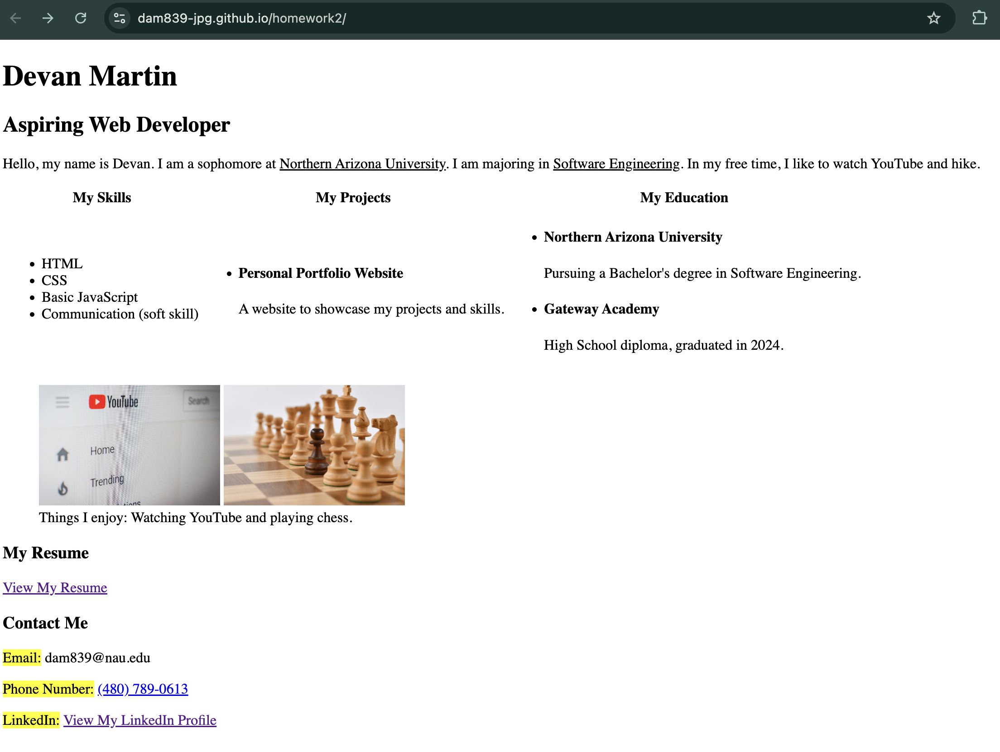
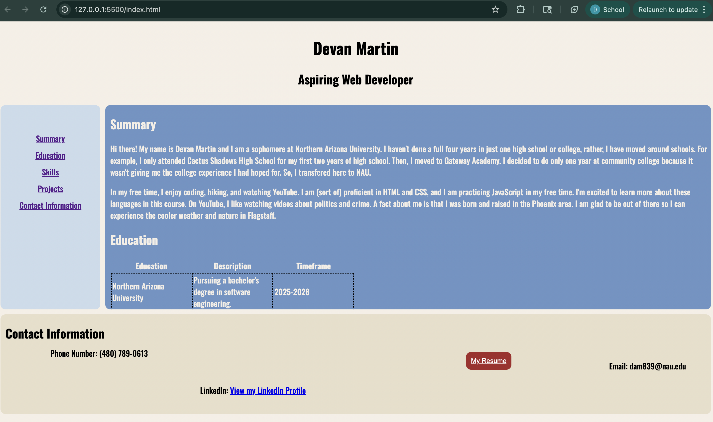

Summary
Hi there! My name is Devan Martin and I am a sophomore at Northern Arizona University. I haven't done a full four years in just one high school or college, rather, I have moved around schools. For example, I only attended Cactus Shadows High School for my first two years of high school. Then, I moved to Gateway Academy. I decided to do only one year at community college because it wasn't giving me the college experience I had hoped for. So, I transfered here to NAU.
In my free time, I enjoy coding, hiking, and watching YouTube. I am (sort of) proficient in HTML and CSS, and I am practicing JavaScript in my free time. I'm excited to learn more about these languages in this course. On YouTube, I like watching videos about politics and crime. A fact about me is that I was born and raised in the Phoenix area. I am glad to be out of there so I can experience the cooler weather and nature in Flagstaff.
Education
| Education | Description | Timeframe |
|---|---|---|
| Northern Arizona University | Pursuing a bachelor's degree in software engineering. | 2025-2028 |
| Paradise Valley Community College | Attended for my freshman year of college. | 2024-2025 |
| Gateway Academy | Attended this high school for my junior and senior years of high school. | 2022-2024 |
| Cactus Shadows High School | Attended for my freshman and sophomore years of high school | 2020-2022 |
Projects
Personal Portfolio
The personal portfolio shown in the image below is a previous iteration of this current portfolio. Currently, it is my only project. I plan on making more projects as I improve at markup and programming languages.
 Skills
HTML
CSS
JavaScript Basics